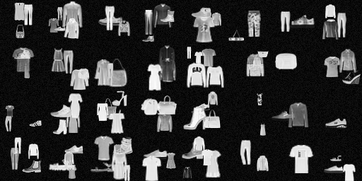

Every network in this module so far has answered the same question: given a picture, which of these labels is it. The previous article spent a lot of measurement on how to build that network well. This one changes the question, and almost everything about the machinery changes with it.
A detector does not output a label. It outputs a list of variable length, where each entry is a box, a class and a confidence, and the list may be empty. That single change breaks the loss function, the metric, the training targets and the output layer all at once. There is no cross entropy against a list. There is no accuracy against a set of rectangles. And a network that ends in a fixed number of units cannot emit a variable number of answers.
What follows is the repair, one piece at a time, measured on pictures where the right answer is known exactly rather than annotated by hand. Three families get named along the way, YOLO, SSD and Faster R-CNN, but the useful thing is not the names: it is that most of what separates them turns out to matter less than a constant applied after the network has stopped computing.
Measured below.

Thirty-two of the training canvases, at their real size. Every garment here carries a box that is exact by construction.
Measured below.
Drag the dashed box. The shaded region is what the two boxes share, and the number under them is that area divided by the area they cover between them:
Try to hold it above 0.75 while moving. Then switch the object size and try again: the same slip in pixels is a different mistake depending on how big the thing is.
Measured below.
Measured below.
The widget starts with the full enumeration. Take sizes away, take aspect ratios away, coarsen the stride, and see how much of the bill you can argue off before the scan stops being able to find things: it never gets close to one pass of the detector. Then switch to the second view, because those fifteen shapes were chosen without looking at a single garment, and the data has opinions about which shapes are worth having.
Measured below.
Measured below.
Measured below.
| Stride | Slots per cell | Candidates per canvas | Objects sharing a cell | Objects with no slot | Recall ceiling | Prior-only IoU | Prior-only recall |
|---|
Measured below.
Measured below.
Click any arm to read what it changed and whether the change survived. The grey band is the width of a random seed, measured by training two of these arms three times each, and it moves to whichever arm is selected: anything inside it is a difference this experiment cannot resolve.
Measured below.
Pick a canvas and raise the confidence until only the boxes you would keep are left, then drop the suppression threshold and watch real objects start disappearing instead. The readout says how far your two settings are from the best pair reachable on the same picture.
Measured below.
Suppression is the least glamorous line in a detector and the only one that is neither learned nor evaluated: sort the boxes by confidence, walk down the list, and delete anything that overlaps a box you have already kept by more than some threshold. One constant, chosen once, usually copied from whichever repository the code came from.
Below, the detections never change. Only the threshold does. The lower panel is how much overlap these pictures actually contain, which is what that constant is really guessing at.
Measured below.
Measured below.
What each idea in this article is actually worth, at this scale, on these pictures.
| Idea | What it buys | Measured here | Watch out for |
|---|---|---|---|
| A dense grid instead of a scan | Every window, evaluated once, for the price of one pass | The bill for an exhaustive scan against one pass of the detector, driven live, with the three factors that make up the ratio. | The equivalence between a crop and a cell is exact only without padding. The detector pads, and the disagreement lives on the border cells. |
| Anchors, or slots | More than one answer per cell, each starting from a different shape | A factorial that separates how many slots there are from how different they are, against a measured seed spread. | Measured above. |
| Grid resolution | Fewer collisions, finer localisation | The same network with the pooling moved, at three strides, plus the assignment ceiling each one implies before training. | Measured above. |
| Non-maximum suppression | One box per object instead of a pile | A sweep of the threshold over fixed detections, chosen on validation and reported on test, split by how crowded the scene is. | Measured above. |
| A second stage | A proper look at each proposal, on the shared feature map | A region head on the same trunk, split into its classification and box-refinement halves, against a one-stage control given the same extra epochs. | Most of what a second stage buys here shows up at strict overlap, not at 0.5. On small pictures where an object covers a couple of cells, expect little. |
Measured below.
Measured below.
Measured below.
The next article in this branch keeps the question and sharpens the answer: a box is a crude thing to say about a shape, and segmentation replaces it with a mask, one label per pixel, all the way to a model that will segment something it was never trained on.
Thanks for reading! Every number here comes from
src/utils/generate_detection_data.py, which times its own
training step before committing to a schedule, caches every trained
network so an interrupted run resumes, and exports the weights the
detector above is running on together with the reference boxes it is
checked against.
Data: Fashion-MNIST garments composited onto 64 by 64 canvases with exact boxes, five classes learned and five held out as distractors, seeded and frozen across every run in the file. Deliberately excluded: feature pyramids, focal loss and heavy augmentation, all of which matter at scale and would confound the comparisons made here.
[1] OverFeat: Integrated Recognition, Localization and Detection using Convolutional Networks
(Sermanet, P. et al., ICLR, 2014; sliding a classifier is a convolution)
[2] You Only Look Once: Unified, Real-Time Object Detection
(Redmon, J. et al., CVPR, 2016)
[3] SSD: Single Shot MultiBox Detector
(Liu, W. et al., ECCV, 2016)
[4] Faster R-CNN: Towards Real-Time Object Detection with Region Proposal Networks
(Ren, S. et al., NeurIPS, 2015)
[5] YOLO9000: Better, Faster, Stronger
(Redmon, J. & Farhadi, A., CVPR, 2017; anchors by k-means on the training boxes)
[6] Focal Loss for Dense Object Detection
(Lin, T.-Y. et al., ICCV, 2017; on the imbalance a dense grid creates)
[7] Soft-NMS: Improving Object Detection With One Line of Code
(Bodla, N. et al., ICCV, 2017)
[8] Microsoft COCO: Common Objects in Context
(Lin, T.-Y. et al., ECCV, 2014; where the mAP conventions used here come from)
Built with D3.js and KaTeX. No frameworks, no build step. The aesthetic is an homage to MLU-Explain (CC BY-SA 4.0), rebuilt with the open fonts Archivo Black and IBM Plex Mono.